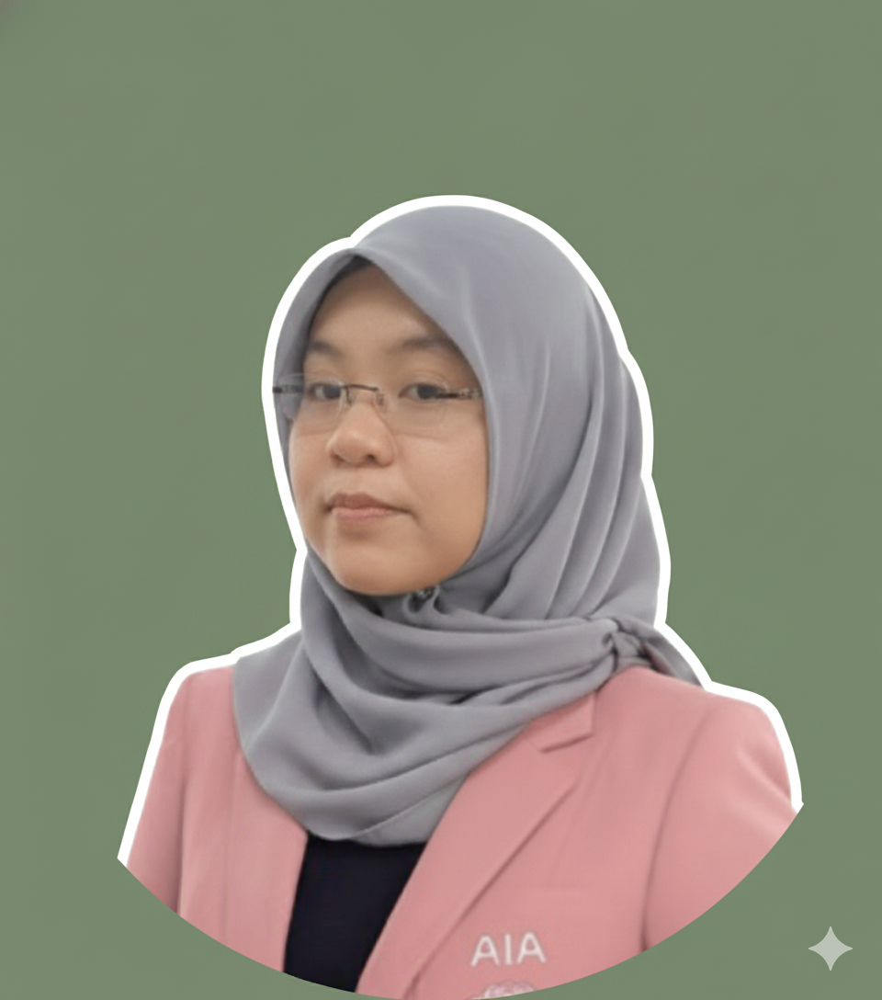

Kami terus cadangkan plan sesuai ikut situasi anda — tanpa hard-sell.
Housing Loan
RM2,500/bln
Ansuran Kereta
RM800/bln
Nafkah Isteri
RM1,000/bln
Yuran Sekolah
RM500/bln
Total Komitmen: RM4,800 / Bulan
Jika gaji terhenti hari ini, berapa bulan anda boleh bertahan dengan simpanan?
Statistik menunjukkan 1 dari 4 rakyat Malaysia akan menghadapi salah satu risiko ini sebelum bersara.
Medical card hanya bayar bil hospital. Bagaimana dengan bil rumah & makan minum jika anda terpaksa ambil cuti tanpa gaji selama 2 tahun akibat Kanser?
Solusi Income Replacement →Jika anda lumpuh dan diberhentikan kerja, wang pampasan inilah yang akan menjadi modal untuk anda mulakan bisnes kecil atau sara hidup keluarga.
Tentang Pampasan Lumpuh →Aset anda akan beku (faraid). Hibah Takaful adalah satu-satunya 'Cash Segera' (Liquid Asset) yang boleh isteri gunakan untuk teruskan hidup serta merta.
Info Hibah Takaful →Sistematic approach untuk pastikan anda tidak 'over-insure' atau 'under-protected'.
Analisis jumlah hutang, nafkah, dan kos sara hidup bulanan anda secara telus.
Kami simulasi apa berlaku jika gaji terhenti hari ini. Di mana punca kebocoran?
Bina 3 pilihan pelan (Standard vs Premium) mengikut bajet optimum anda.
Submission digital 100%. Polisi aktif dalam masa sesingkat 24 jam.
Mencari titik keseimbangan terbaik antara harga premium dan jumlah perlindungan. Zero pembaziran.
Kami menggunakan data inflasi perubatan 2026 dan komitmen sebenar anda untuk pengiraan tepat.
Setiap pelan dibina khusus (custom-engineered) mengikut fasa hidup anda—bukan pelan generic.
Dengan latar belakang PhD in Engineering, saya mendekati Takaful dengan logik dan ketepatan. Saya bantu anda melihat "lompong" dalam perlindungan yang orang lain mungkin terlepas pandang.

Dr. Hana, PhD
AIA Public Takaful Consultant
"Dulu saya ingat Takaful ni mahal. Tapi lepas Dr. Hana kira ikut bajet saya, rupanya RM150/bulan dah boleh cover pampasan RM350,000. Sangat berbaloi."
Encik Hafizzi
Jurutera, 32 Tahun
"Saya suka cara Hana explain. Takde pusing-pusing. Dia tunjuk terus berapa lompong kewangan saya kalau saya sakit kritikal. Terus sign up on the spot."
Puan Sarah
Guru, 29 Tahun
"Pendekatan engineering Dr. Hana memang berbeza. Sangat logik dan mudah faham. Saya rasa selamat tahu keluarga saya dilindungi dengan pelan yang dioptimumkan."
Arif Mansor
Manager, 40 Tahun
Dapatkan quotation rasmi dan pengiraan ROI perlindungan dalam masa 30-60 minit melalui WhatsApp.
Respons: ~15-30 Minit
Medical card hanya bayar bil hospital. Tapi siapa bayar ansuran rumah & nafkah isteri bila anda sakit kritikal & hilangan punca pendapatan? Ini adalah 'lompong' terbesar dalam kewangan rakyat Malaysia.
Buka Analisis Penuh →Panduan berasaskan data untuk bantu anda buat keputusan bijak.
Masa adalah aset paling berharga dalam perancangan kewangan anda. Jangan tunggu sampai 'stabil' baru nak mula.
Baca lanjut →
Panduan untuk fresh graduate & orang muda. Fahami 3 jenis takaful paling penting dengan gaji pertama.
Baca lanjut →
Simpanan habis bila diuji, tapi takaful kekal bantu semasa krisis. Fahami kenapa perlukan kedua-duanya.
Baca lanjut →
Formula mudah untuk pastikan hidup terus stabil walau diuji 3D. Urus 10% pendapatan untuk 100 bulan ketenangan.
Baca lanjut →
Fahami 6 sebab kukuh kenapa AIA PUBLIC Takaful menonjol, termasuk kestabilan, inovasi, dan tuntutan cekap.
Baca lanjut →
Fahami kenapa Pelan Penggantian Gaji adalah jaring keselamatan #1 anda apabila ditimpa penyakit kritikal.
Baca lanjut →
Apa itu pelan CI, kenapa lebih penting dari medical card, dan cara kira jumlah perlindungan ganti gaji.
Baca lanjut →
Strategi terkini hadapi inflasi hospital 2026. Kenapa limit RM1 juta mungkin sudah tidak cukup untuk masa depan.
Baca lanjut →
Semua yang anda perlu tahu: Apa itu medical card, kenapa penting, dan tips pilih pelan terbaik.
Baca lanjut →
Kisah benar orang yang terpaksa minta derma & berhutang untuk bayar bil hospital. Jangan tunggu sampai terlambat!
Baca lanjut →
Ramai cari medical card dulu, tapi itu mungkin silap. Fahami kenapa lindungi gaji dengan CI lebih utama.
Baca lanjut →
Ramai keliru antara pampasan CI dan Hilang Upaya (HUMK/TPD). Fahami beza dan kepentingannya.
Baca lanjut →
Medical card bayar bil hospital. Pelan CI bayar gaji anda bila tak boleh kerja. Fahami beza ini.
Baca lanjut →
Kisah benar kenapa ramai terpaksa meminta derma walaupun ada medical card. Income replacement adalah kunci.
Baca lanjut →
Jangan salah faham! PERKESO hanya untuk kemalangan kerja. Medical card lindungi anda 24/7.
Baca lanjut →
Pelan medical card standalone atau pelan Takaful Keluarga komprehensif? Perbandingan untuk pilihan bijak.
Baca lanjut →
Medical card syarikat mungkin tak cukup. Kenapa anda perlukan polisi peribadi sebagai 'tayar spare'.
Baca lanjut →
Medical card tak bayar kos rawatan luar & MC akibat kemalangan. PA adalah pelengkap murah & penting.
Baca lanjut →
Polisi baru lulus tapi claim reject? Fahami 'waiting period' 24 jam, 30 hari, dan 120 hari.
Baca lanjut →
Jangan tunggu musibah. Bina strategi hibah yang kukuh dan relevan dengan kos sara hidup masa depan.
Baca lanjut →
Mula kecil, upgrade bila mampu. Pelan 10 tahun dengan conversion option tanpa medical exam.
Baca lanjut →
Berita Terkini 2026: RM13 bilion Wang Tak Dituntut direkodkan. Adakah harta anda akan jadi sebahagian daripada statistik ini?
Baca lanjut →
Apa itu hibah, kenapa lebih baik dari wasiat, dan bagaimana ia selamatkan keluarga dari perebutan harta.
Baca lanjut →
Kalkulator interaktif untuk kira berapa hibah ideal untuk keluarga survive sekurang-kurangnya 8 tahun.
Baca lanjut →
Semak adakah perbelanjaan anda selari dengan panduan Belanjawanku KWSP 2023 untuk warga Lembah Klang & bandar utama.
Baca lanjut →
Ramai tak tahu hibah boleh dituntut lebih awal jika hilang upaya kekal (TPD). Fahami caranya.
Baca lanjut →
Pelan mampu milik atau premium? Perbandingan dua pelan hibah terbaik dari AIA Takaful.
Baca lanjut →
Bagaimana 'Keyman Insurance' & Cross-Hibah selamatkan bisnes bila partner meninggal dunia.
Baca lanjut →
Bank suruh ambil MRTT? Kenapa MLTT mungkin pilihan lebih bijak untuk pewarisan rumah.
Baca lanjut →
Kenapa tindakan awal untuk 'lock' kelulusan anak adalah lebih penting dari harga premium.
Baca lanjut →
Tak pernah terlambat. Strategi perlindungan & pilihan plan untuk warga emas.
Baca lanjut →
Nak melabur tapi takut rugi? Fahami bagaimana Takaful Investment-Linked (ILP) berfungsi.
Baca lanjut →
Panduan adik-beradik berkongsi caruman untuk jaminan kewangan ibu bapa.
Baca lanjut →
Tiada artikel ditemui untuk carian anda.
Jawapan tepat untuk keputusan bijak.
Satu-satunya sistem perlindungan terbaik adalah sistem yang dipasang sebelum ianya diperlukan.
Bina Pelan StrategikSetiap tahun anda bertangguh, premium takaful boleh naik 3-8%. Kunci harga rendah anda hari ini.
Dapatkan Pelan Percuma